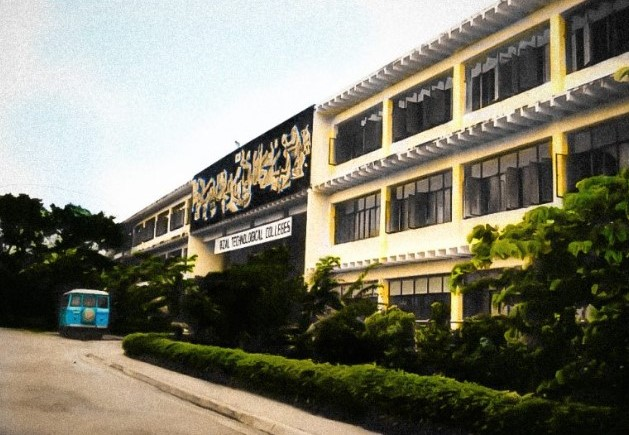

HISTORY OF RTU
Rizal Technological University (RTU) was established on July 11, 1969, upon the approval of the
Secretary of Education in response to the utmost request of the Provincial Board of Rizal,
headed by Governor Isidro S. Rodriguez, to put up a higher education institution in the Province
of Rizal. It was first known as the College of Rizal.
The College of Rizal opened its classes on July 14, 1969, with course offerings in business
administration, education, and liberal arts. On March 20, 1975, the College of Rizal in Pasig
and Rizal Technical High School in Mandaluyong, both situated in the Province of Rizal, were
merged and converted into the Rizal Technological Colleges by virtue of Presidential Decree (PD)
No. 674. The decree authorized the expansion of curricular programs and the promotion of
research in the development and conservation of natural resources in the Province of Rizal.
This decree broadened the support and strengthened the organization of the college. In 1975,
upon the establishment of the Metropolitan Manila Commission, Pasig was transferred to the
territorial jurisdiction of the MMC. The province of Rizal could not continue to financially
support the colleges. Several alternatives were proposed to save the RTC. One was to transfer
the management and administration of the RTC to one of the existing towns in the Province of
Rizal or Metropolitan Manila. The worst possible alternative was to phase out the Colleges. The
leadership, the faculty, and the studentry of the colleges would not allow this to happen,
however, so they worked out the possible nationalization of the RTC.
With the support of then Metropolitan Manila Governor Madam Imelda Marcos, the RTC constituency,
the Kabataang Barangay School Chapter of the RTC led by Dr. Jesus Rodrigo F. Torres, and the
Collegiate and High School Faculty Clubs at the forefront of the struggle for survival,
President Ferdinand E. Marcos signed into law Presidential Decree 1341-A on April 1, 1978,
converting the Rizal Technological Colleges into a State College. The decree, however, was
received only on October 13, 1978; thus, the RTC has been celebrating its College Week, and
later its University Week on the days centered on October 13. After 19 years, the college was
converted into the Rizal Technological University on October 11, 1997, by virtue of Republic Act
No. 8365.
RTU provides professional, scientific, and technological education in engineering, technology,
education, arts, sciences, business, and entrepreneurship. It also promotes research, extension,
and advanced studies in these areas. Through its Cooperative Education Program, RTU maintains
strong industry partnerships and involves students in civic activities. The university's
programs are duly accredited by the Accrediting Agency of Chartered Colleges and Universities in
the Philippines (AACCUP). The university is also ISO-certified.
Today, RTU has two campuses. The Mandaluyong Main Campus houses the College of Arts and Sciences
(CAS), the College of Business, Entrepreneurship, and Accountancy (CBEA), the College of
Education (CEd), and the College of Engineering (CEng). The Pasig Branch includes the Institute
of Human Kinetics (IHK), the Institute of Architecture (IA), and the Institute of Computer
Studies (ICS).
RTU is recognized for pioneering several innovative academic programs in the Philippines, such
as Doctor of Technology Education, Master of Science in Engineering Education, Instrumentation
and Control Engineering, Computer Engineering, and Instrumentation and Control Technology. It
serves as the National Instrumentation and Control Center and the Welding and Research Training
Center. RTU is also a pilot school for the Technology Resource Center under the Ministry of
Human Settlements and a member of the school network implementing the Engineering and Science
Education Program (ESEP) in the Philippines.
At present, RTU is renowned for its academic excellence, with students consistently achieving
top ranks in numerous board examinations. The university is committed to promoting free higher
education, strengthening relationships between academia and industry, and establishing
international partnerships to continuously broaden its horizons. Through these efforts, RTU not
only maintains its reputation as a leading educational institution but also ensures that its
graduates are well-prepared to contribute to the global community.